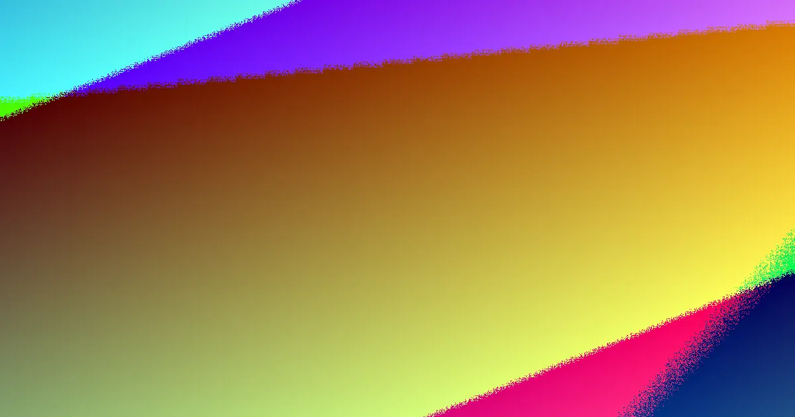

Best Website Creation offers free, conversion-focused web design for Australian businesses. Before approving any build, request a written scope detailing pages, functions, content responsibilities, and launch tasks. Ensure the proposed site structure aligns with your desired customer actions, using W3C standards and ACCC guidance for verification. This approach helps separate headline offers from the actual deliverables that determine a site's success in generating enquiries, bookings, or sales.
For local buyers, web design australia cost guide clarifying the practicalities of a free offer.
Web Design Australia Cost Guide Explained
Best Website Creation states it provides free, conversion-focused web design specifically for Australian businesses. This initial description is a valuable starting point for comparison. The 'free' aspect necessitates a clear written explanation of the included work, while the 'conversion-focused' claim requires a straightforward description of the primary customer action the website is designed to support. Without these details, two proposals might appear similar but encompass vastly different scopes of work. A business owner should be able to identify a specific page list, a clear contact path, form handling capabilities, content loading procedures, and defined launch tasks within the proposal, and understand which are included, optional, or dependent on information yet to be provided.
For those comparing web design options within specific Australian cities, referencing a guide to website design in Brisbane can offer a useful contrast for refining the project scope.
Turning Conversion Claims into Approval Questions
A conversion claim gains practical meaning only when the provider outlines the user journey in writing. Key questions include identifying the primary action expected on the homepage, determining which pages are essential to facilitate that action, and mapping out the visitor's subsequent steps. A business aiming for enquiries will likely require a different page hierarchy and user flow compared to one focused on direct purchases or bookings. Therefore, the proposed site structure must directly align with the commercial objectives the website needs to achieve.
Request the provider to explain how copy, headings, forms, and calls to action will interact once the final content is integrated. This explanation should be a clear sequence, not marketing jargon: a visitor arrives, understands the offer, identifies the next step, and completes the desired action. If the response remains abstract, the conversion promise has not yet been translated into concrete, approvable work.
- What is the primary customer action the site should prompt?
- Which pages are essential to support this action?
- What content must be supplied before the build can be properly reviewed?
Using Quotes to Compare Deliverables
The most reliable basis for comparison is not a visual mock-up, but a detailed written scope. The Australian Competition and Consumer Commission (ACCC) serves as a relevant authority when verifying the clarity and fairness of service descriptions. A comprehensive quote should clearly delineate included services, additional costs, and client responsibilities. For website development, this typically involves a page list, specified functions, details on revision processes, content entry procedures, contact form functionality, analytics setup (if offered), and defined launch tasks.
If one proposal is notably brief compared to another, it is advisable to ask the provider of the shorter quote to elaborate on their wording before comparing prices or granting approval. Establishing clarity at this stage significantly reduces the likelihood of future disputes, as approval is then tied to documented deliverables rather than assumptions made during sales discussions.
Assessing Build Behaviour Post-Design Preview
The World Wide Web Consortium (W3C), which develops web standards, provides a useful external reference point for discussing site structure and behaviour, beyond mere appearance. It is not necessary to inspect the code directly, but a provider should be able to articulate how navigation, headings, forms, and page sections will function cohesively across different devices and once populated with final content. This discussion often highlights the difference between a polished preview and a functional website.
A static layout might appear complete, yet leave unresolved decisions regarding menu depth, button labelling, form placement, or how extended text blocks impact mobile viewing experiences. Addressing these details late in the process can lead to approval delays, as the focus shifts from design selection to rectifying fundamental usability decisions. It is crucial to ensure that navigation is agreed upon before launch, mobile layouts are reviewed with actual text and images, and the primary enquiry or booking path is thoroughly tested prior to final approval.
- Define the Core Offer. Ask the provider to clearly state in writing what specific work is included in the 'free offer' and what falls outside its scope.
- Identify the Customer Action. Clearly define the primary customer action the website needs to prompt (e.g., enquiry, purchase, booking).
- Request a Written Scope. Obtain a detailed scope document listing pages, included functions, required content, revision process, and launch tasks.
- Verify Site Structure. Ensure the proposed site structure and user flow directly support the defined customer action.
- Check Deliverables. Confirm that the quote itemises deliverables and responsibilities, aligning with ACCC guidance for clarity.
Common questions
What does 'conversion-focused web design' mean in practice? It means the website is specifically structured and designed to encourage visitors to take a particular action, such as making an enquiry, filling out a form, or completing a purchase. The provider should be able to detail the user journey and how different elements support this goal.
Why is a written scope so important before approving a web design build? A written scope clearly outlines all agreed-upon deliverables, responsibilities, and tasks. This prevents misunderstandings, ensures both parties are aligned on the project's extent, and provides a basis for comparison and approval, especially when dealing with offers like 'free design'.
How do W3C standards relate to approving a website build? W3C standards ensure websites are built with accessibility, usability, and compatibility in mind across different devices and browsers. Understanding how the proposed design adheres to these standards helps ensure the final site will be functional and robust, not just visually appealing.
This guide helps Australian business owners evaluate web design proposals, particularly those with 'free offer' claims, by focusing on clear scope definition and alignment with business goals.